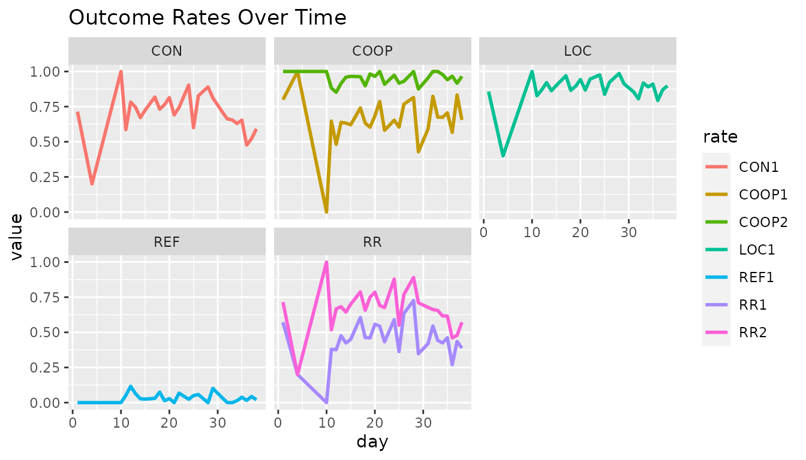

Intro to outcomerate
Rafael Pilliard Hellwig
2024-02-29
Source:vignettes/intro-to-outcomerate.Rmd
intro-to-outcomerate.RmdThis vignette demonstrates the basic applications of the outcomerate package in R. I will draw on the popular tidyverse family of packages for the analysis.
To keep things lighthearted, I will use a toy dataset named middleearth. The data consists of 1691 rows, each representing an attempt to interview a member of middle earth. Not all elements in the sample resulted in a completed interview, however. Some cases could not be located, others were located but no one was available, some individuals were found but refused to participate, etc. These particular ‘dispositions’ can be summarized from the code variable in the data:
# load dataset
data(middleearth)
# tabulate frequency table of outcomes
kable(count(middleearth, code, outcome))| code | outcome | n |
|---|---|---|
| NE | Not eligible | 71 |
| I | Complete interview | 760 |
| P | Partial interview | 339 |
| R | Refusal and break-off | 59 |
| NC | Non-contact | 288 |
| UO | Unlocated | 173 |
| O | Other | 1 |
It is common for survey practitioners to report a number of outcome rates. These rates give an indication as to the quality of the field work. For example, you may want to know the response rate: the proportion of all cases from our intended sample that actually resulted in an interview.
How might we go about calculating this?
When we inspect our disposition codes, it become apparent that there could be several ways to do this. For example, you may start by using the total number of complete cases (760) and diving this by the number of observations in the data, 760 / 1691 = 0.45. But what about partially completed interviews? If you include those, you would get a rate of (760 + 339) / 1691 = 0.65.
It turns out that there are a lot of ways to calculate such outcome rates. Unless we specify exactly what we mean by “response rate”, it is easy for claims regarding survey quality to become opaque, lacking comparability with other surveys. For this reason, the American Association for Public Opinion Research (AAPOR) has published a set of standardized definitions for practitioners. The guide has no fewer than 6 different variants of the ‘response rate.’ In the our example, the rates we calculated would match to AAPOR’s “Response Rate 1” and “Response Rate 2”:
\[ \textrm{RR1} = \frac{\textrm{I}}{\textrm{(I + P) + R + O + NC + (UO + UH)}} = \frac{760}{(760 + 339) + 59 + 1 + 288 + (173 + 0)} = 0.47 \]
\[ \textrm{RR2} = \frac{\textrm{(I + P)}}{\textrm{(I + P) + R + O + NC + (UO + UH)}} = \frac{(760 + 339)}{(760 + 339) + 59 + 1 + 288 + (173 + 0)} = 0.68 \]
What’s more, the guide has multiple definitions for contact rates, refusal rates, and cooperation rates, and weighted rates. It can easily become tedious to look all these up and calculate them by hand. The outcomerate package makes it easier by giving all rates (and more) in one go:
disp_counts <- c(I = 760, P = 339, R = 59, NC = 288, O = 1, UO = 173, NE = 71)
e <- eligibility_rate(disp_counts)
outcomerate(disp_counts, e = e)
#> RR1 RR2 RR3 RR4 RR5 RR6 COOP1
#> 0.46913580 0.67839506 0.47149080 0.68180052 0.52522460 0.75950242 0.65573770
#> COOP2 COOP3 COOP4 REF1 REF2 REF3 CON1
#> 0.94823123 0.65630397 0.94905009 0.03641975 0.03660258 0.04077402 0.71543210
#> CON2 CON3 LOC1 LOC2
#> 0.71902347 0.80096752 0.89320988 0.89769367Each of these rates has a precise definition (see ?outcomerate for details). As we can see, RR1 and RR2 match our earlier calculations. In the example, I needed to specify the parameter e, the estimated proportion of unknown cases unknowns (UO) that were eligible. The eligibility_rate() offers a default way to calculate this, but others may be appropriate.
If we had wanted just to return the two rates from above, we could specify this:
outcomerate(disp_counts, rate = c("RR1", "RR2"))
#> RR1 RR2
#> 0.4691358 0.6783951More Advanced Uses
In certain situations, you may want to calculate outcome rates based on a vector of codes, rather than a table of frequency counts. It is just as easy to obtain rates this way using outcomerate:
# print the head of the dataset
head(middleearth)
#> # A tibble: 6 × 9
#> code outcome researcher region Q1 Q2 day race svywt
#> <ord> <ord> <chr> <fct> <fct> <int> <int> <fct> <dbl>
#> 1 UO Unlocated #23 Beleriand NA NA 1 Elf 32
#> 2 I Complete interview #23 Beleriand No 7 1 Hobbit 52
#> 3 I Complete interview #23 Beleriand No 7 1 Hobbit 52
#> 4 P Partial interview #13 Beleriand No 7 1 Hobbit 52
#> 5 NE Not eligible #50 Beleriand NA NA 1 Man 85
#> 6 I Complete interview #23 Beleriand No 7 1 Man 85
# calculate rates using codes; should be same result as before
outcomerate(middleearth$code, e = e)
#> RR1 RR2 RR3 RR4 RR5 RR6 COOP1
#> 0.46913580 0.67839506 0.47149080 0.68180052 0.52522460 0.75950242 0.65573770
#> COOP2 COOP3 COOP4 REF1 REF2 REF3 CON1
#> 0.94823123 0.65630397 0.94905009 0.03641975 0.03660258 0.04077402 0.71543210
#> CON2 CON3 LOC1 LOC2
#> 0.71902347 0.80096752 0.89320988 0.89769367Why might we prefer this input format, when it is just as easy to specify the counts?
Well, if we want to calculate outcome rates by some other covariate, we typically need to go back to the original data. For example, here we use dplyr and tidyr to calculate outcome rates of interest by race:
# create a small wrapper function
get_rates <- function(x, ...){
rlist <- c("RR1", "RR2", "COOP1", "COOP2", "CON1", "REF1", "LOC1")
as.data.frame(as.list(outcomerate(x, rate = rlist, e = e, ...)))
}
# calculate rates by group
middleearth %>%
group_by(race) %>%
summarise(n = n(),
Nhat = sum(svywt),
rates = list(get_rates(code))) %>%
unnest(cols = c(rates)) %>%
kable(digits = 2, caption = "Outcome Rates by Race")| race | n | Nhat | RR1 | RR2 | COOP1 | COOP2 | CON1 | REF1 | LOC1 |
|---|---|---|---|---|---|---|---|---|---|
| Dwarf | 376 | 5640 | 0.29 | 0.35 | 0.78 | 0.95 | 0.37 | 0.02 | 0.92 |
| Elf | 251 | 8032 | 0.08 | 0.33 | 0.21 | 0.87 | 0.38 | 0.05 | 0.41 |
| Hobbit | 404 | 21008 | 0.41 | 0.86 | 0.45 | 0.94 | 0.91 | 0.05 | 1.00 |
| Man | 659 | 56015 | 0.76 | 0.89 | 0.82 | 0.97 | 0.92 | 0.03 | 1.00 |
| Wizard | 1 | 3 | 1.00 | 1.00 | 1.00 | 1.00 | 1.00 | 0.00 | 1.00 |
Weighted Outcome Rates
In certain situations, we also wish to produce weighted outcome rates, using the survey weights that are provided in the data. This is easy to do with one additional parameter:
# calculate weighted rates by group
middleearth %>%
group_by(region) %>%
summarise(n = n(),
Nhat = sum(svywt),
rates = list(get_rates(code, weight = svywt))) %>%
unnest(cols = c(rates)) %>%
kable(digits = 2, caption = "Weighted Outcome Rates by Region")| region | n | Nhat | RR1w | RR2w | COOP1w | COOP2w | CON1w | REF1w | LOC1w |
|---|---|---|---|---|---|---|---|---|---|
| Beleriand | 415 | 21579 | 0.51 | 0.75 | 0.62 | 0.91 | 0.83 | 0.07 | 0.93 |
| Rhun | 195 | 9637 | 0.55 | 0.72 | 0.74 | 0.96 | 0.75 | 0.03 | 0.92 |
| Eriador | 564 | 29794 | 0.64 | 0.83 | 0.75 | 0.98 | 0.85 | 0.02 | 0.94 |
| Rhovanion | 306 | 17830 | 0.61 | 0.85 | 0.69 | 0.96 | 0.89 | 0.03 | 0.96 |
| Harad | 211 | 11858 | 0.60 | 0.79 | 0.74 | 0.96 | 0.82 | 0.03 | 0.95 |
Compare this to the equivalent unweighted estimates, and you see that the results are not the same.
| region | n | Nhat | RR1 | RR2 | COOP1 | COOP2 | CON1 | REF1 | LOC1 |
|---|---|---|---|---|---|---|---|---|---|
| Beleriand | 415 | 21579 | 0.39 | 0.62 | 0.56 | 0.89 | 0.70 | 0.07 | 0.87 |
| Rhun | 195 | 9637 | 0.41 | 0.55 | 0.71 | 0.96 | 0.57 | 0.02 | 0.87 |
| Eriador | 564 | 29794 | 0.51 | 0.70 | 0.71 | 0.97 | 0.72 | 0.02 | 0.89 |
| Rhovanion | 306 | 17830 | 0.53 | 0.78 | 0.65 | 0.96 | 0.81 | 0.03 | 0.93 |
| Harad | 211 | 11858 | 0.50 | 0.70 | 0.68 | 0.95 | 0.73 | 0.03 | 0.90 |
By Date
Lastly, another useful application of grouped analysis is to calculate the rates by date. This allows you to monitor the quality day by day and notice if performance starts to change over time.
library(ggplot2)
library(stringr)
# day-by-day quality monitoring
middleearth %>%
group_by(day) %>%
summarise(rates = list(get_rates(code))) %>%
unnest(cols = c(rates)) %>%
gather(rate, value, -day) %>%
mutate(type = str_sub(rate, start = -9, end = -2)) %>%
ggplot(aes(x = day, y = value, colour = rate)) +
geom_line(size = 1) +
facet_wrap(~type) +
labs(title = "Outcome Rates Over Time")
#> Warning: Using `size` aesthetic for lines was deprecated in ggplot2 3.4.0.
#> ℹ Please use `linewidth` instead.
#> This warning is displayed once every 8 hours.
#> Call `lifecycle::last_lifecycle_warnings()` to see where this warning was
#> generated.
In this example, we can see that the contact rate (CON) and response rate (RR) start to degrade in quality towards day 30. If fieldwork was still continuing, this could be something to look into and attempt to explain and/or redress.
Variance Estimation
To estimate the errors from estimates generated by outcomerate(), the simplest approach is to use the normal approximation. Since outcome rates are nothing more than proportions (or nearly so), their standard error is given by \(SE(p) = \sqrt{(p(1-p))/n}\).
# first, calculate the outcome rates
(res <- outcomerate(middleearth$code))
#> RR1 RR2 RR5 RR6 COOP1 COOP2 COOP3
#> 0.46913580 0.67839506 0.52522460 0.75950242 0.65573770 0.94823123 0.65630397
#> COOP4 REF1 REF3 CON1 CON3 LOC1
#> 0.94905009 0.03641975 0.04077402 0.71543210 0.80096752 0.89320988
# estimate standard errors using the Normal approximation for proportions
se <- sapply(res, function(p) sqrt((p * (1 - p)) / nrow(middleearth)))With the standard error in hand, we can then construct frequentist confidence intervals:
# calculate 95% confidence intervals
rbind(res - (se * 1.96), res + (se * 1.96))
#> RR1 RR2 RR5 RR6 COOP1 COOP2 COOP3
#> [1,] 0.4453496 0.6561319 0.5014233 0.7391318 0.6330916 0.9376710 0.6336667
#> [2,] 0.4929220 0.7006582 0.5490259 0.7798730 0.6783838 0.9587915 0.6789412
#> COOP4 REF1 REF3 CON1 CON3 LOC1
#> [1,] 0.9385691 0.02749088 0.03134782 0.6939260 0.7819369 0.8784892
#> [2,] 0.9595310 0.04534863 0.05020021 0.7369382 0.8199982 0.9079305Weighted variance estimation in complex surveys require different procedures that go beyond the scope of this vignette. We recommend using svycontrast() from the survey package to obtain design-based errors that account for elements such as clustering and stratification. Bootstrapping primary sampling units (PSUs) may also be an appropriate method depending on the design at hand.